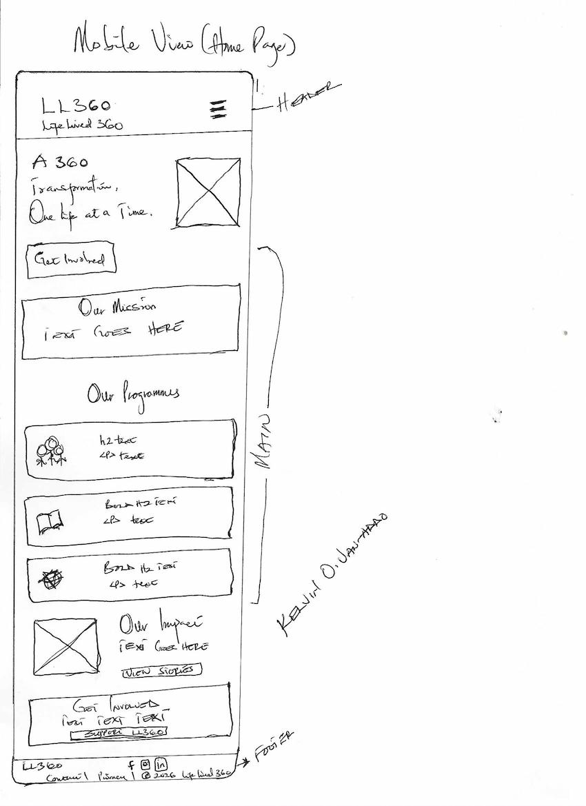
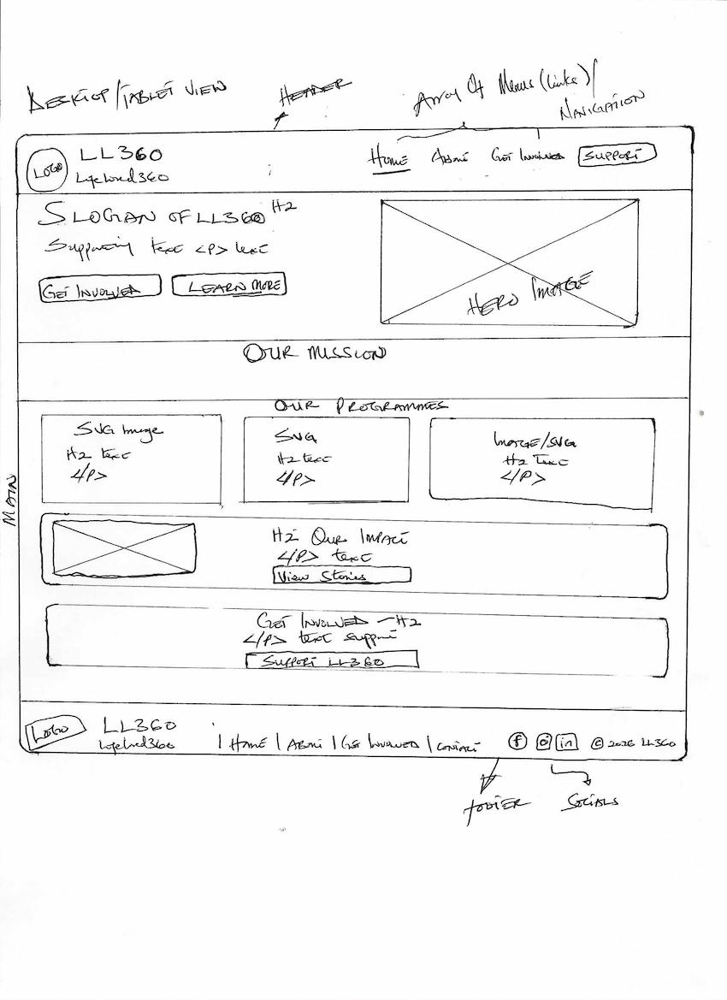

1. Site Name
Life Lived 360 (LL360)
Life Lived 360 represents the organisation's belief that meaningful transformation should address the whole person and extend across every aspect of life. The name reflects its commitment to helping individuals move towards a more purposeful, empowered and self-reliant life.
The name was retained because it carries the organisation's established identity, history and vision. The abbreviation LL360 provides a simple and recognisable form for digital communication.
Proposed domain: lifelived360.org
2. Site Purpose
The Life Lived 360 website will serve as the organisation's central digital platform for communicating its mission, vision, programmes and community impact. It will introduce visitors to the organisation's work, share opportunities for participation and provide accessible information for individuals, volunteers, partners and supporters.
With a renewed focus on young men's development, the website will highlight opportunities for personal growth, mentorship, faith-building, community engagement and self-reliance. It will also provide ways for interested individuals and organisations to volunteer, collaborate and support LL360's initiatives.
3. Website Scenarios
The following scenarios represent questions that visitors from LL360's target audience and wider community may ask when accessing the website.
Young Men
- How can Life Lived 360 help me develop personally, strengthen my faith and become more self-reliant?
- Are there mentorship programmes, personal development activities or opportunities I can participate in?
Volunteers and Supporters
- How can I volunteer, contribute my skills or support the organisation's community initiatives?
- What projects has LL360 undertaken, and what impact has the organisation made in the community?
Potential Partners and Organisations
- How can my organisation partner with LL360 to support young men and community development?
- Where can I find information about LL360's mission, leadership and contact details?
4. Color Scheme
The LL360 website will retain the organisation's established multicoloured identity while adopting a more refined and consistent colour system. The selected colours represent transformation, hope, compassion, growth and purpose.
Burgundy — #A82E57
The primary brand accent. Used for prominent navigation elements, important section highlights and primary call-to-action buttons.
Charcoal — #292929
Used for main headings, body text and selected dark backgrounds to provide clarity and visual contrast.
Orange — #E69A35
Represents energy, courage and action. Used for secondary buttons, highlights and important visual accents.
Golden Yellow — #F2C94C
Represents hope and opportunity. Used for decorative elements, secondary highlights and selected accents.
Purple — #76508D
Represents reflection, purpose and spiritual depth. Used as a supporting accent in faith and personal development sections.
Olive Green — #8AAB43
Represents growth, renewal and self-reliance. Used for supporting visual accents and impact indicators.
White (#FFFFFF) and warm off-white (#F5F3EF) will provide the primary page backgrounds, creating a clean and welcoming visual experience.
5. Typography
The LL360 website will use two complementary typefaces to create a consistent, modern and accessible reading experience.
Montserrat — Headings
Montserrat will be used for the main page headings, section headings, navigation labels and prominent calls to action. Its bold and contemporary appearance communicates confidence, direction and transformation.
Life Lived 360 — A 360 Transformation, One Life at a Time.
Roboto — Body Text
Roboto will be used for paragraphs, descriptions, form labels and general website content. Its clean and highly readable design supports comfortable reading across mobile and desktop devices.
Empowering individuals through faith, personal development, community support and self-reliance.
6. Homepage Wireframes
The homepage layout will adapt to different screen sizes to provide a clear and accessible experience on mobile, tablet and desktop devices.
Mobile View

Desktop View
